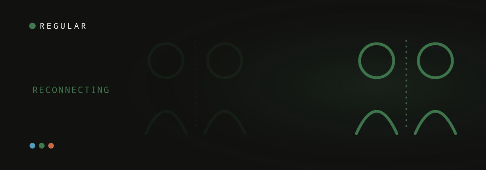

 ES
ESA note from Liza — I’m a mom of one and co-founder here. In our first year my partner felt like a third wheel while I was buried in the baby. Naming it — gently — changed things. Why trust us.
New dads feel rejected after a baby because a mother and newborn form an intense, all-consuming bond that temporarily leaves little attention for the partner — it's about capacity, not how she feels about you. The fix is to name it without blame and stay an active partner, not to withdraw. You love your kid, you'd do anything for them, and still feel like a third wheel — that doesn't make you petty, and you're not alone.
Why it happens
It happens because the newborn bond pulls your partner's attention, hormones and body toward survival, leaving you outside the circle for a while. In the early months, a mother and newborn form an intense, biologically driven bond — her attention, hormones, and body are wired toward keeping a tiny human alive. That’s survival, not a snub. But for the partner standing next to it, the experience can genuinely feel like being demoted from "lover" to "support staff". A systematic review of first-time fathers’ own accounts found exactly this: men describe feeling sidelined, unsure of their role, and uncertain whether their struggles even count next to their partner’s (Baldwin et al., 2018). It’s also a season when relationship satisfaction tends to dip for both partners — research finds a majority of couples report a drop in the first year.
It’s the season, not a verdict
Feeling rejected is a symptom of the season, not a verdict on your marriage. Feeling left out doesn’t mean your relationship is broken or that she loves you less. It means you’re in the most depleting, all-hands season a couple goes through, where there’s temporarily not enough of anyone to go around. Naming that honestly — to yourself first — takes a lot of the sting out.
What to do about it
What works is naming the feeling without blame, making small bids for connection, and owning a real piece of the load — not waiting it out. Say it without blame: "I’ve been feeling a bit on the outside lately — I want to be closer to you and to the baby." Make small bids for connection and answer hers. Own a whole domain of baby care (nights, bottles, the doctor) so you’re a partner, not an assistant. And ask the 1% question: "What would make tomorrow 1% easier for you?" — it puts you back on her team.
Don’t suffer in silence
Silence is the trap: bottling it up to spare her turns loneliness into resentment and can mask real depression. A lot of new dads bottle this up so they don’t add to her load — and that silence quietly curdles into resentment and numbness. Talk to a friend who’s been there. If low mood, irritability, or detachment lingers, see a doctor: paternal perinatal depression is real and treatable, and it affects roughly 8% of fathers — about 1 in 12 (Cameron et al., 2016). Support networks like Postpartum Support International include help for dads, too.
| Do — invites her in | Don’t — pushes her away |
|---|---|
| “I miss feeling close to you.” | “You never have time for me.” |
| Own a whole domain of baby care (nights, bottles, the doctor) | Wait quietly to be noticed, then keep score |
| Make small bids for connection and answer hers | Go silent so you don’t add to her load |
Frequently asked questions
Is it normal for a new dad to feel rejected?
Yes. When your partner's attention goes to the baby and physical closeness drops, feeling sidelined or invisible is common and valid — even though it is rarely intended as rejection.
Why do I feel pushed aside after the baby?
Newborn care is all-consuming, and an exhausted, touched-out partner has little left over. The distance is usually about capacity, not how she feels about you.
How do I deal with feeling rejected without resentment?
Name the feeling honestly without blame, keep making small bids for connection, and take load off her plate. Address the loneliness directly rather than letting it harden into score-keeping.
Should I tell my partner I feel rejected?
Yes — gently and without accusation. 'I miss feeling close to you' invites her in; 'you never have time for me' pushes her away.
Could this be paternal depression?
It can be. Paternal perinatal depression is real — affecting roughly 8% of dads, about 1 in 12 — and feeling persistently low, irritable or disconnected is worth raising with a doctor.
Keep readingLonely as a new dad? Why it happens and what helps · How to tell your wife you feel lonely (without the guilt) · How to reconnect with your wife after a baby
Co-founder of Regular. Writes about relationships, parenthood, and the science of how couples stay close after a baby.
About Regular — the relationship app for new dads, built by a small team of parents who needed it themselves. Small, science-backed moves with your partner, not big talks.